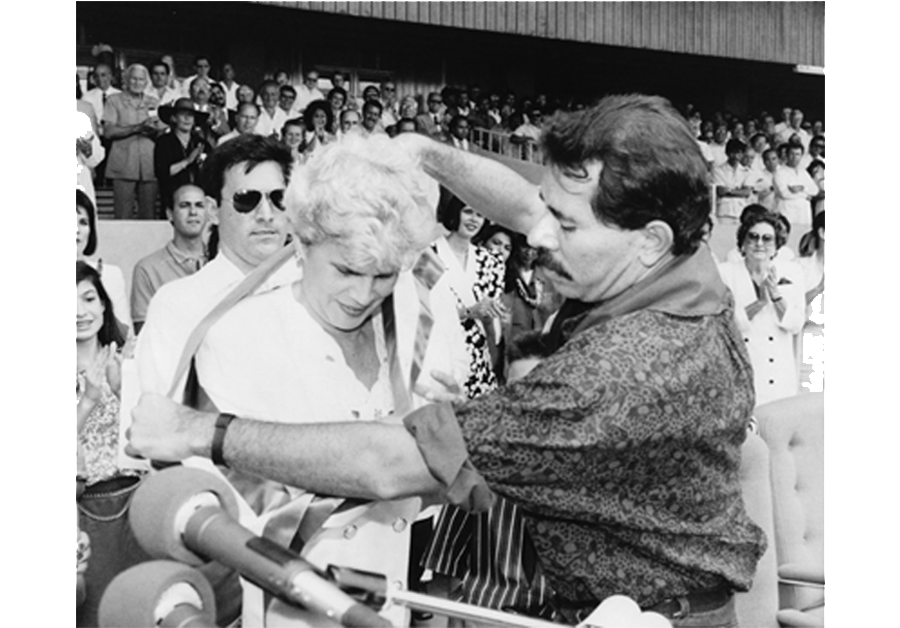

Violeta Barrios de Chamorro
"Durante su presidencia Chamorro revirtió una serie de políticas sandinistas. Varias industrias estatales fueron privatizadas, la censura fue levantada, y se redujo el tamaño del ejército. Al mismo tiempo, conservó una serie de sandinistas en el gobierno y trató de conciliar las distintas facciones políticas del país. Muchos acreditan a sus políticas conciliatorias el haber ayudado a mantener la frágil paz que se había negociado. Teniendo prohibido presentarse para un segundo mandato, se retiró de la política después de finalizado su mandato en enero de 1997."

CAMAPAÑA ELECTORAL
1989
TOMA DE POSESION
25 DE FEBRERO 1990

PROTOCOLO DE DESARME
30 DE MAYO 1990